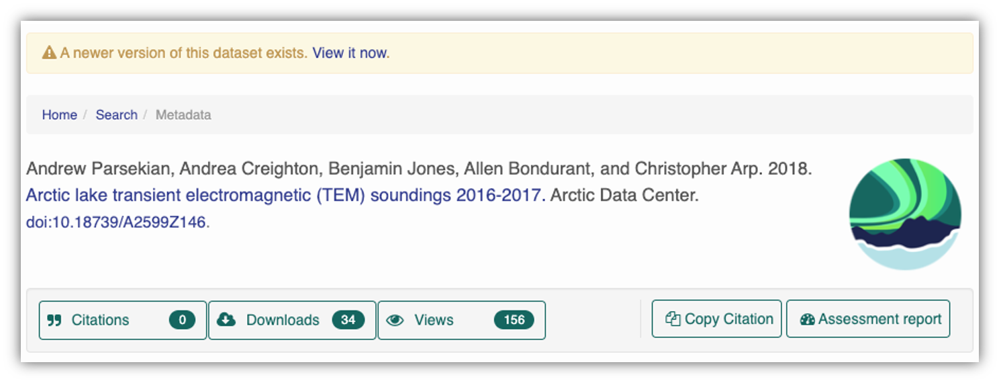

2 Open Data and Reproducibility
2.1 Introduction to Reproducible Research
2.1.1 Learning Objectives
- Shared understanding of open and research reproducibility
- Introduction to computational reproducibility
- Introduction to FAIR and CARE as they relate to open data
- Familiarity with metadata best practices
2.1.2 What do we mean by open science and research reproducibility?
Throughout this course you will hear us emphasize open practices and research reproducibility. Indeed, as a data repository charged with both preserving and making accessible the products of NSF funded research, it is no surprise that these topics are central to our mission. However, these terms, while readily parsed, can mean different things to different individuals depending on their frame of reference and research activities. Further, even with a shared definition variation exists in the degree to which openness and research reproducibility can (or should) be implemented.
Before we begin, we are going to take the time to discuss and possibly develop a shared understanding of the terms ‘open’ and ‘reproducible’ as they pertain to research.
Discuss
In small groups answer the following questions:
- What does open research mean to you?
- Do you consider your own research practices open?
- If not, why not? If so, how so?
- What does reproducible research mean to you?
- Who should be able to reproduce research?
- Is your own research reproducible?
- If not, why not? If so, how so?
Identify an individual to summarize and report back to the full group.
2.1.3 What is research reproducibility and how does it relate to open science?
Reproducibility is a hallmark of the scientific research process, which is based on empirical observations coupled with explanatory models. Whether integrating data from across multiple studies and sources, or working with your own data, the data life cycle typically involves some degree of data collection/integration, quality assurance practices, analysis and synthesis. Operating in a reproducible fashion means that each of these steps can be easily re-executed to achieve the same result, ideally as part of a single workflow.
Reproducibility means different things to different researchers. For our purposes, practical reproducibility looks like:
- Preserving the data
- Preserving the software workflow
- Documenting what you did
- Describing how to interpret it all
Reproducibility does not, by definition, require openness. Reproducibility can be achieved within a single research activity or across a research program with a closed group of collaborators. However, when working in an OPEN and REPRODUCIBLE manner, we are better able to transform knowledge into benefits for society. In this section we will expand on the benefits of reproducible research and open science before highlighting some best practices.
2.1.4 Open Science
To enable full reproducibility by the broader community; researchers, practitioners, policy makers etc, all products of the research activity need to be accessible - open data, open code, and open publications. Further, full research transparency also requires open peer review. There are, of course, data sensitivities and ethical considerations regarding open everything and these will be discussed later.
At its core, the aims of Open Science are to:
- Increase transparency of the research process
- Enable reproducibility of results and conclusions
- Accelerate discovery
- Enhance and facilitate collaboration
- Increase diversity, equity and inclusion
- Transform knowledge into benefits for society
So, why is reproducible research important?
Working in a reproducible manner builds efficiencies into your own research practices. The ability to automate processes and rerun analyses as you collect more data, or share your full workflow (including data, code and products) with colleagues, will accelerate the pace of your research and collaborations. However, beyond these direct benefits, reproducible research builds trust in science with the public, policy makers and others.

What data were used in this study? What methods applied? What were the parameter settings? What documentation or code are available to us to evaluate the results? Can we trust these data and methods?
Are the results reproducible?

Ionnidis (2005) contends that “Most research findings are false for most research designs and for most fields”, and a study of replicability in psychology experiments found that “Most replication effects were smaller than the original results” (Open Science Collaboration, 2015).

In the case of ‘climategate’, it took three years, and over 300 personnel, to gather the necessary provenance information in order to document how results, figures and other outputs were derived from input sources. Time and effort that could have been significantly reduced with appropriate documentation and reproducible practices. Moving forward, through reproducible research training, practices, and infrastructure, the need to manually chase this information will be reduced enabling replication studies and great trust in science.
Computational reproducibility
Computational reproducibility is the ability to document data, analyses, and models sufficiently for other researchers to be able to understand and ideally re-execute the computations that led to scientific results and conclusions.
To be able to evaluate the data, analyses, and models on which conclusions are drawn, computational reproducibility requires open science approaches, including straightforward steps for archiving data and code openly along with the scientific workflows describing the provenance of scientific results (e.g., Hampton et al. (2015), Munafò et al. (2017)).
Scientific workflows encapsulate all of the steps from data acquisition, cleaning, transformation, integration, analysis, and visualization.

Workflows can range in detail from simple flowcharts to fully executable scripts. R scripts and python scripts are a textual form of a workflow, and when researchers publish specific versions of the scripts and data used in an analysis, it becomes far easier to repeat their computations and understand the provenance of their conclusions.
Preserving computational workflows enables understanding, evaluation, and reuse for the benefit of future you and your collaborators and colleagues across disciplines.
2.1.5 A Note on Community Principles: CARE and FAIR

In facilitating use of data resources, the community have converged on principles surrounding best practices for open data management. One set of these principles is the FAIR principles: Findable, Accessible, Interoperable, and Reproducible. FAIR principles and open science are overlapping, but distinct concepts. Open science supports a culture of sharing research outputs and data, and FAIR focuses on how to prepare the data.
Note, that accessibility in FAIR does not require the data to be open. The guiding principles put forward by FORCE 11 for accessibility are that:
- (meta)data are retrievable by their identifier using a standard communicaitons protocol
- the protocol is open, free, and universally implementable
- the protocol allows for an authentication and authorization procedure, where neccesary
- metadata are accessible, even when the data are no longer available
The CARE Principles for Indigenous Data Governance complement the more data-centric approach of the FAIR principles, introducing social responsibility to open data management practices. The CARE Principles stand for:
- Collective Benefit
- Authority to Control
- Responsibility
- Ethics
These will be discussed more comprehensively during the data ethics section of the course
2.1.6 Metadata Best Practices
Well structured and described data unpin the FAIR principles and we’ll visit how best to organize your data in a tidy and effective manner (in both theory and practice) shortly. Here we focus on metadata best practices.
Metadata (data about data) is an important part of the data life cycle because it enables data reuse long after the original collection. Imagine that you’re writing your metadata for a typical researcher (who might even be you!) 30+ years from now - what will they need to understand what’s inside your data files?
The goal is to have enough information for the researcher to understand the data, interpret the data, and then re-use the data in another study.
Another way to think about it is to answer the following questions with the documentation:
- What was measured?
- Who measured it?
- When was it measured?
- Where was it measured?
- How was it measured?
- How is the data structured?
- Why was the data collected?
- Who should get credit for this data (researcher AND funding agency)?
- How can this data be reused (licensing)?
Bibliographic Details
The details that will help your data be cited correctly are:
- a global identifier like a digital object identifier (DOI);
- a descriptive title that includes information about the topic, the geographic location, the dates, and if applicable, the scale of the data
- a descriptive abstract that serves as a brief overview off the specific contents and purpose of the data package
- funding information like the award number and the sponsor;
- the people and organizations like the creator of the dataset (ie who should be cited), the person to contact about the dataset (if different than the creator), and the contributors to the dataset
Discovery Details
The details that will help your data be discovered correctly are:
- the geospatial coverage of the data, including the field and laboratory sampling locations, place names and precise coordinates;
- the temporal coverage of the data, including when the measurements were made and what time period (ie the calendar time or the geologic time) the measurements apply to;
- the taxonomic coverage of the data, including what species were measured and what taxonomy standards and procedures were followed; as well as
- any other contextual information as needed.
Interpretation Details
The details that will help your data be interpreted correctly are:
- the collection methods for both field and laboratory data;
- the full experimental and project design as well as how the data in the dataset fits into the overall project;
- the processing methods for both field and laboratory samples IN FULL;
- all sample quality control procedures;
- the provenance information to support your analysis and modelling methods;
- information about the hardware and software used to process your data, including the make, model, and version; and
- the computing quality control procedures like any testing or code review.
Data Structure and Contents
Well constructed metadata also includes information about the data structure and contents. Everything needs a description: the data model, the data objects (like tables, images, matricies, spatial layers, etc), and the variables all need to be described so that there is no room for misinterpretation.
Variable information includes the definition of a variable, a standardized unit of measurement, definitions of any coded values (such as 0 = not collected), and any missing values (such as 999 = NA).
Not only is this information helpful to you and any other researcher in the future using your data, but it is also helpful to search engines. The semantics of your dataset are crucial to ensure your data is both discoverable by others and interoperable (that is, reusable).
Using an example from the natural sciences, if you were to search for the character string carbon dioxide flux in the general search box at the Arctic Data Center, not all relevant results will be shown due to varying vocabulary conventions (ie, CO2 flux instead of carbon dioxide flux) across disciplines — only datasets containing the exact words carbon dioxide flux are returned. With correct semantic annotation of the variables, your dataset that includes information about carbon dioxide flux but that calls it CO2 flux WOULD be included in that search.

Above left demonstrates a typical search for “carbon dioxide flux”, yielding 20 datasets. Above right illustrates an annotated search for “carbon dioxide flux”, yielding 29 datasets. Note that if you were to interact with the site and explore the results of the figure on the right, the dataset in red of Figure 3 will not appear in the typical search for “carbon dioxide flux.”
Rights and Attribution
Correctly assigning a way for your datasets to be cited and reused is the last piece of a complete metadata document. This section sets the scientific rights and expectations for the future on your data, like:
- the citation format to be used when giving credit for the data;
- the attribution expectations for the dataset;
- the reuse rights, which describe who may use the data and for what purpose;
- the redistribution rights, which describe who may copy and redistribute the metadata and the data; and
- the legal terms and conditions like how the data are licensed for reuse.
Ethical Data Practices
Additionally, at the Arctic Data Center, we now require data submissions to include information on the level of data sensitivity and to provide a statement of ethical research practice.
As the primary repository for the NSF Office of Polar Programs Arctic Section, the Arctic Data Center accepts data from all disciplines. This includes data from social science research that may include sensitive data. Sharing sensitive data can pose challenges to researchers, however sharing metadata or anonymized data contributes to discovery, supports open science principles, and helps reduce duplicate research efforts. To help mitigate the challenges of sharing sensitive data, researchers submitting data now have the option to choose between varying levels of sensitivity that best represent their dataset.

Within the research methods section, submitters are now asked to describe the ethical data practices used throughout their research. The information provided will be visible as part of the metadata record and this field has been added to encourage transparency in data ethics. Transparency in data ethics is a vital part of open science and sharing ethical practices encourages deeper discussion about data reuse and ethics.

So, how do you organize all this information? There are a number of metadata standards (think, templates) that you could use, including the Ecological Metadata Language (EML), Geospatial Metadata Standards like ISO 19115 and ISO 19139, the Biological Data Profile (BDP), Dublin Core, Darwin Core, PREMIS, the Metadata Encoding and Transmission Standard (METS), and the list goes on and on. The Arctic Data Center runs on EML and has a simple to use interface that guides you through the process of creating your metadata record.
2.1.7 Data Identifiers
Many journals require a DOI - a digital object identifier - be assigned to the published data before the paper can be accepted for publication. The reason for that is so that the data can easily be found and easily linked to.
At the Arctic Data Center, we assign a DOI to each published dataset. But, sometimes datasets need to be updated. Each version of a dataset published with the Arctic Data Center has a unique identifier associated with it. Researchers should cite the exact version of the dataset that they used in their analysis, even if there is a newer version of the dataset available. When there is a newer version available, that will be clearly marked on the original dataset page with a yellow banner indicating as such.

Having the data identified in this manner allows us to accurately track the dataset usage metrics. The Arctic Data Center tracks the number of citations, the number of downloads, and the number of views of each dataset in the catalog.

2.1.8 Data Citation
Data citation best practices are focused on providing credit where credit is due and indexing and exposing data citations across international repository networks. In 2014, Force 11 established a Joint Declaration of Data Citation Principles that includes:
- Importance of data citation
- Credit and Attribution
- Evidence
- Unique Identification
- Access
- Persistence
- Specificity and Verifiability
- Interoperability and Flexibility
Transitive Credit
We want to move towards a model such that when a user cites a research publication we will also know:
- Which data produced it
- What software produced it
- What was derived from it
- Who to credit down the attribution stack

This is transitive credit. And it changes the way in which we think about science communication and traditional publications.